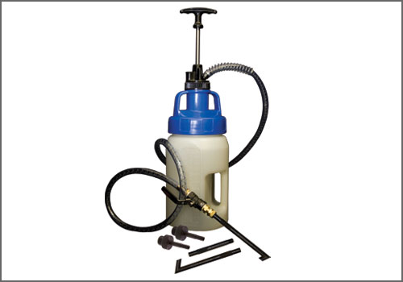
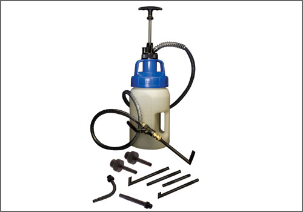

VW/Audi "CVT" ATF Adapter - AST Tool # ATF 17 CVT
VW/Audi "CVT" ATF Adapter
AST tool# ATF 17 CVT

VW/Audi CVT Drive Line Adapter used with the AST ATF Filler System. The attachment has a 22mm x 1.5 thread.
- Fits CVT Transmissions
- 22mm x 1.5
- Steel Construction
�
Contact AST for pricing.
Assenmacher Specialty Tools
1-800-525-2943
This Tool is also available in the following kits:

ATF 1008-5 EURO - Euro Drive Line Filler

ATF 1033-5 VW - VW/Audi Drive Line Filler

ATF 1033 VW - VW/Audi Drive Line Filler

ATF 1100-5 - 9pc Drive Line Filler System